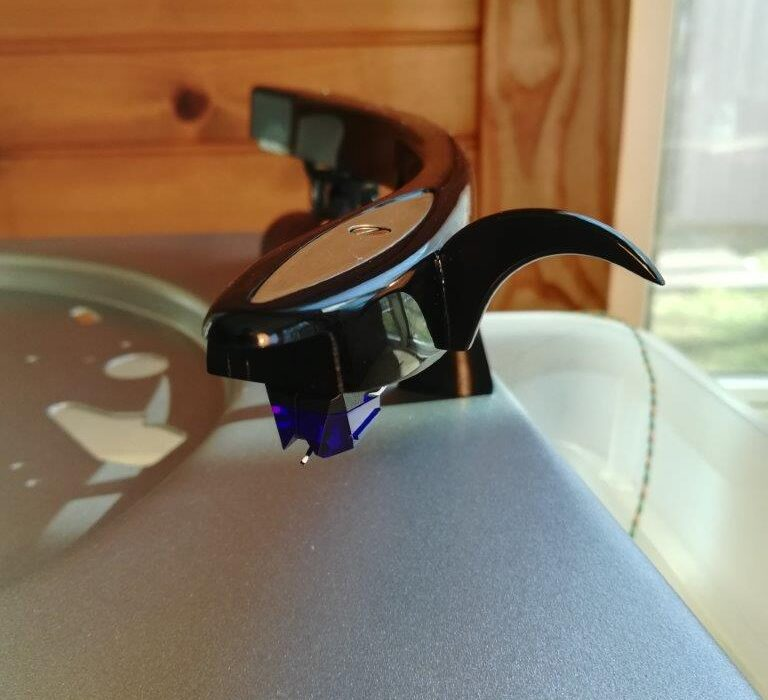
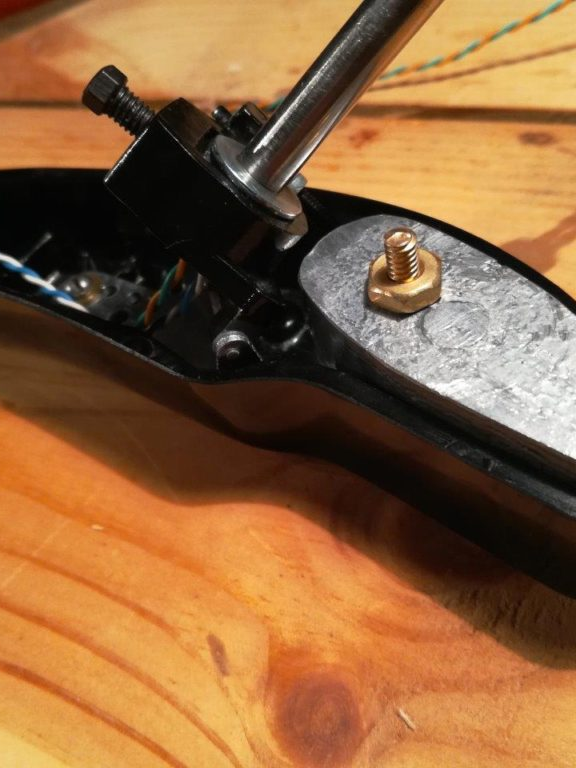

The 60 year-old Magnavox Micromatic sounded good in its day, but you can’t escape the fact that it used a ceramic cartridge. Ceramic cartridges could sound fine – though they haven’t really been considered high-fidelity since the early 60’s – but replacement styli are hard to find, and they are mostly bonded diamond conicals, which is to say, of the cheap variety.
I did not intend to build a beautiful, bespoke idler-drive manual turntable, and have no choice but to use cheaply produced replacement styli for a mid-fi (at best) cartridge for the rest of it’s life. More importantly, what if companies stop producing styli for the cartridge? I do not ever want my custom turntable to be obsolete.
To satisfy both the need for choice in cartridges and styli, and to plan for long-term serviceability, I decided I had to either replace the tonearm, or modify it to accept a modern cartridge. Because I think the Micromatic tonearms were graceful, gorgeous pieces of mid-century design, I chose to modify mine. This came with a number of challenges for which I was not quite prepared.
First, what cartridge would I use? I knew it had to be low-compliance to deal with a fairly clunky tonearm. The original Micromatic tonearm tracked, famously, at 3 grams vertical tracking force, plus or minus half a gram. There are actually plenty of cartridges out there that can handle 2.5 grams VTF, but I thought it might be best to stay with 3g, to ensure that the somewhat clunky tonearm wouldn’t present too much inertia to a lighter tracking cartridge.
After much research, I decided to try the new DJ cartridges from Audio-Technica. They have high output, decent specs, track at a recommended 3g, and more importantly, can accept about a dozen different styli. I started with the AT-XP3.
Now I had to modify the tonearm to accept a 1/2″ mount cartridge. The original bracket inside the acrylic arm supported a turnover cartridge, one side for LPs and 45s, one for 78s. After drilling out the rivets that held it together, I had a metal bracket with two holes alllmost spaced 1/2″ apart. I wound up turning them into two slots using the Dremel cut-off wheel. While centering the cartridge is tricky, at the same time holding those tiny nuts and tightening screws, I managed to securely mount a modern moving magnet cartridge.
Since I had stripped out all mechanism related to the tonearm, I used the Dremel to cut off the tab which raised it. I thought it would reduce overall mass, allowing the tonearm to track better. I wish now that I had disabled the automatic features of the tonearm but left the structure in place, as I ultimately had to reinvent the horizontal pivot. More on that later.
I needed to rewire the tonearm. The original wires were in rough shape, although I now also realize they would have been a better choice than what I ended up with. Having read online that the wires from a USB mouse sounded even better than some purpose-made tonearm wire, I stripped two from my stash of computer parts. I discovered that not all mouse wires are the same. One set was rather stiff and springy – not good for a tonearm. The other set of wires was limp, so that’s what I chose.
Having read that a twisted pair of tonearm wires would likely be enough to protect against hum from electromagnetic interference, I rewired the tonearm with my new-found mouse wires, twisting the positive and negative of each channel tightly together.
Using my Dremel again, with a spiral cutting bit, I drilled holes in some of the ribs inside the arm, through which to run the wires.
I also needed a finger lift. With a totally manual tonearm, I’d need a large, ergonomic finger lift with which to manipulate the arm. I cut a crescent moon shape from 3/16” black acrylic, then super-glued it to the tonearm. Super-glue works quite well on plastics, and has been holding up for a couple months now. I sanded the new finger lift through the grits to 1000, polished, and it looks like it was always there.
I also shaved off the tab on the inside of the tonearm which tapped the side of the record to detect size. It was no longer needed, and since I was polishing acrylic, I might as well delete the now vestigal feature.
Having rewired the tonearm, added a finger lift, and exchanged the tiny crystal cartridge with a larger moving magnet cartridge, I expected that the front of the tonearm would be heavier than stock, which meant that the counter weight would have to be heavier. I cast a new counterweight from pure lead.
The original counterweight was made of pot metal, mostly zinc, which weighs a little more than 7 grams per cubic centimeter. Pure lead weighs more than 11 grams per cubic centimeter. For the same size, the counterweight could increase around 60%. I used soapstone to carve a mold for casting a new counterweight.
Lead sheeting salvaged from a dentist’s office provided the metal. I melted, poured into the preheated mold and filed off the flashing. The weight wound up right around 100 grams, and, through no special care or calculation, the stylus measured around 3 grams with the adjustment spring at its most slack.
Without the lift mechanism in place, the 1/4” horizontal pivot shaft was hollow. Instead of running the wires through a hole in the deck, I decided to run the wires through the shaft. Among other things, this nearly negated any resistance the wires would present to the pivot.
Because I shed the mechanism for all of the automatic functions, I no longer had the full support of the tonearm horizontal pivot. I thought I could design a horizontal bearing better than stock. I tried using a variety of sleeve bearings, including oilite bronze bearings. Tight tolerance sleeve bearings provided the least amount of lateral movement, but also the most friction. I abandoned the sleeve bearings and went to a 1/4” needle roller bearing to manage the lateral forces. For the thrust forces, I also found cheap 1/4” roller thrust bearings.
I pressed the needle bearing into a custom-made Patagonian rosewood base, tapped the pivot shaft, then used a small compression coil spring and locknut to hold the assembly together.

The needle bearing allowed much more “slop” in the tonearm pivot, but also allowed an almost frictionless movement. So what was more important, precise movement, or low friction? After a lot of experimentation, I decided that low friction was the most important. When I had the tonearm tightened down with very little wobble in the horizontal pivot, it tracked poorly. Actually, the tightened coil spring caused the tonearm to drift back to the post, so I thought that it would provide for some antiskate. Even this tiny resistance to horizontal motion displayed as a stylus flexed to one side and, on one record, a repeating skip. My conclusion was that low friction movement is the most important attribute of the horizontal pivot, not precise control. Considering some manufactured unipivots display a lot of wobble but track perfectly, I think that restricted motion is not necessarily as important as freedom of motion. After loosening the tension on the bearings, the tonearm has play from side to side when flexed by hand, but while tracking on a record, seems to be controlled and smooth-tracking. At least, I do not hear any distortion and haven’t experienced a skip since.
Update: I have since upgraded to the AT-XP5 elliptical stylus and it sounds terrific. I was worried that the lack of adjustment for tracking angle and overhang would mean that I was stuck with a conical stylus, but I have detected no distortion or unevenness in the channels. The sound is much more articulate, and the turntable already sounding better than my U-Turn.
Tags: Micromatic, Tonearm